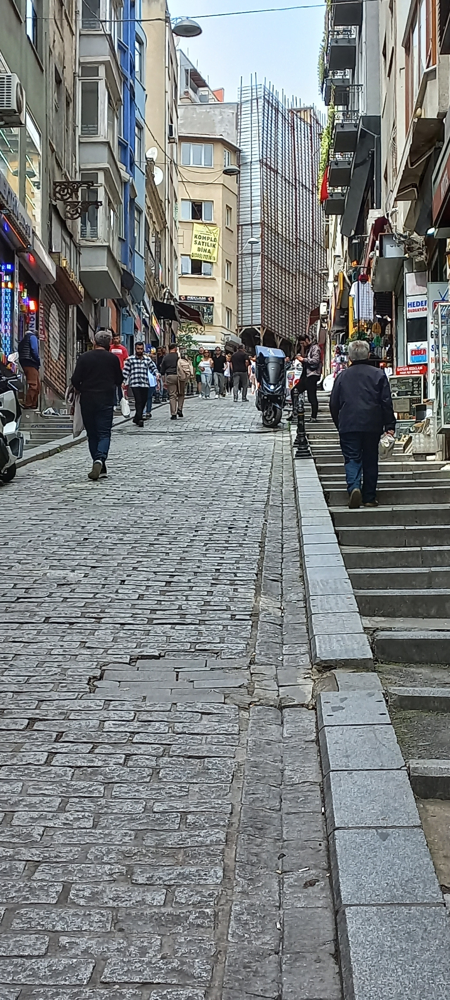
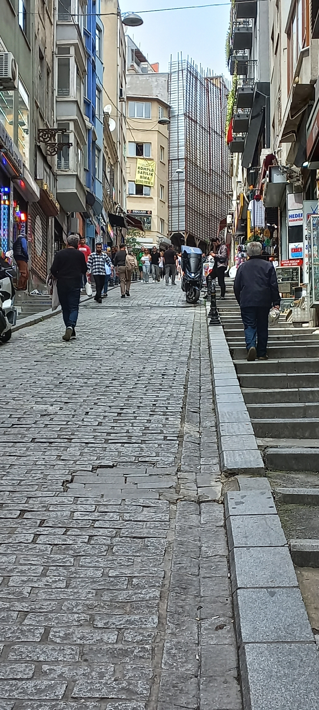
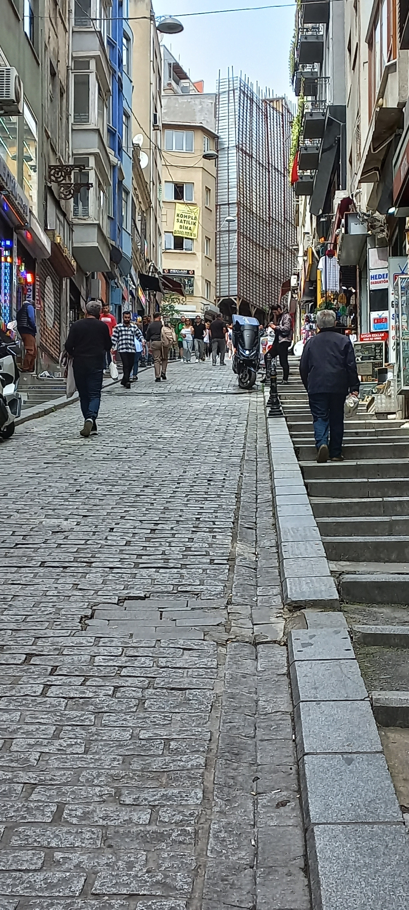

معرض الصور
شاركنا
عن ذكرى
معرض الصور
الصفحه الرئيسيه
تجد في هذه الصفحه جميع المغامرات والقصص بإمكانك النقر على النص أسفل الصور لمعرفة المزيد من التفاصيل
arte museum - Dubai
اسطنبول - Büyükada

شارع الاستقلال - اسطنبول
 arte museum - Dubai

شارع الاستقلال - اسطنبول
arte museum - Dubai

شارع الاستقلال - اسطنبول